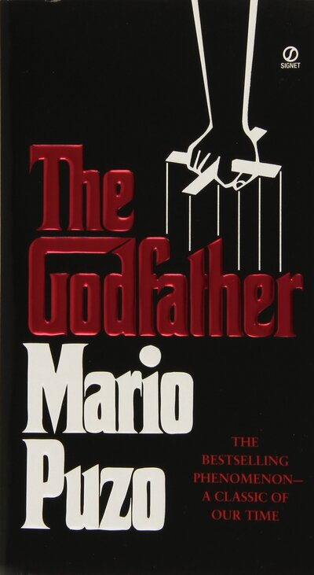

The Godfather is a 1969 novel by Mario Puzo that explores the intricate world of an organized syndicate and the powerful Corleone family. Set in post-World War II America, the story revolves around Vito Corleone, the head of a powerful family in New York, and his eventual successor, his youngest son, Michael Corleone. The novel delves into themes of power, loyalty, justice, and family, as Vito navigates the treacherous underworld while maintaining a sense of honor and respect.
Book Information
- Title:
- The Godfather
- Author:
- Mario Puzo
- Genre:
- Crime, Drama
- Publication Year:
- 1969
- Main Characters:
-
- Vito Corleone
- Michael Corleone
- Sonny Corleone
- Tom Hagen
- Kay Adams
Key Themes in The Godfather
- Family Loyalty
- Power and Corruption
- Justice and Revenge
- The American Dream
- Violence and Crime